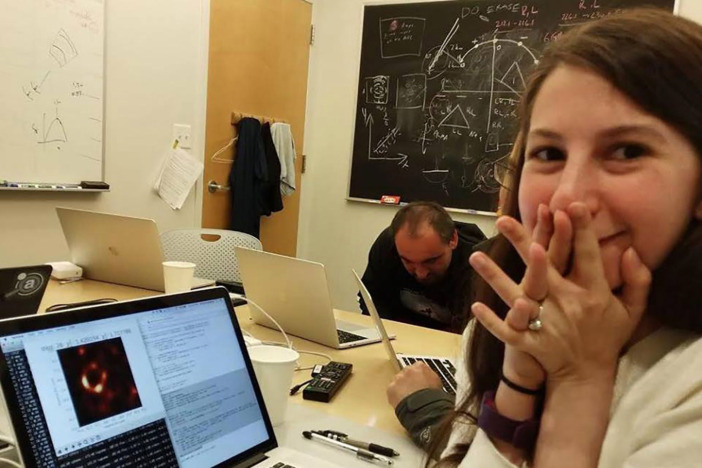

Quem é ela
Katie Bouman (West Lafayette, Indiana, 9 de maio de 1989) é apaixonada pelo o que faz. Formada em engenharia elétrica pela Universidade de Michigan, ela tem mestrado pelo MIT e é doutoranda também no MIT.
Hoje é também professora assistente de Ciência da Computação no Instituto de Tecnologia da Califórnia e pesquisa métodos computacionais para geração de imagens. Bouman foi uma das pessoas responsáveis pela reprodução da primeira foto de um buraco negro da História.
Foto: Reprodução/Twitter/MIT.
A primeira foto
Divulgada em abril de 2019 pela Fundação Nacional de Ciências (National Science Foundation), a primeira foto de um buraco negro da História foi gerada por uma rede de telescópios, chamada de projeto Event Horizon Telescope (EHT), que começou há alguns anos. No vídeo, Katie explica o processo de captura e processamento da imagem e como o trabalho dela fez com que a revelação da foto nunca vista (mas teorizada por Einstein) pudesse virar realidade.
Para conseguir armazenar a imagem, a equipe que trabalha no projeto (que continua) reservou um total de 5 petabytes de informação. Toda essa pilha de dados foi gerada pelo esforço de por centenas de cientistas, programadores e engenheiros, Bouman entre eles. Acima, a reação dela quando viu a foto pela primeira vez. Ela mesma postou essa imagem, em sua página pessoal no Facebook.